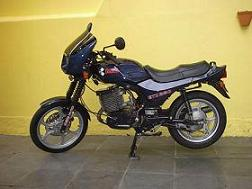

MZ RZ 250, 1947, s-a fabricat in numar restrans, si depasea 250km/h, enorm pentru vremea sa
MZ RT 125, 1951, a fost revolutionar la vremea sa, fiind cel mai usor motor de 125 de pana atunci
MZ RE 125, aprox. 1950, a castigat numeroase copetitii la clasa sa, iar varianta stradala a avut un succes izbitor
MZ BK 350, 1957, era revolutionar datorita asezarii cilindrilor(boxer) si a cuplului oferit
MZ ES 125, 1967, o motocicleta foarte comoda si silentioasa pentru vremea, destinata drumurilor lungi
MZ ES 150, 1967, nu s-a bucurat de acelasi succes ca fratele mai mare, 175-u
MZ ES 250, 1967, foarte bine cotat, datorita puterii si a fiabilitatii
MZ ETS 250, 1969, cu 19cp/5000rpm, se poate considera predecesorul ETZ-ului

MZ ETS 400, 1969, participant la multe competitii prin lume
MZ GE 250, aprox. 1970, invingator la multe competitii de teren in Germania
MZ TS 125, 1975, fratele mai mic al ts-ului de 150
MZ TS 150, 1975, o motocicleta medie si foarte accesibila ca pret
MZ ETZ 125, 1985, destinata tinerilor de la 16 ani, mica, usoara si manevrabila :)
MZ ETZ 150, 1985, detinea raportul perfect pret-performanta pentru vremea sa
MZ ETZ 250, 1985, cel mai vandut si cel mai popular model din istoria firmei
MZ ETZ 251, 1989, succesorul 250-ului. imparteau acelasi propulsor, diferentele minore
tineau de greutate, desing si anumite electronice. S-a exportat in USA 5 ani
MZ ETZ 301, 1991, fratele mia mare al 250-ului, oferea mai multa performanta

MZ ETZ 250, 1992, modelul pentru export in Brazilia('92-'95). A avut un succes covarsitor
MZ SILVERSTAR cu motor ROTAX de 500cmc, in 4 timpi
MZ 1000S, 2004, o motocicleta moderna, cometitva, ce se fabrica de 5 ani incoace